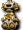

地上地下城
夢見之塔
 迪格邦克
迪格邦克
妖獸窟
海賊村地城
海賊要塞
海灘衝刺
不可思議地城
冰之城
怪物城堡
滿月的櫻花村
寂靜路易斯
諾克斯要塞
異次元地帶
公會城地城
鏡之城
【冰之城】1F迴廊｜雷卡房間｜特里培房間｜普羅斯米房間｜2F迴廊｜黛瑪房間｜斯帕克羅房間｜歐爾多房間｜里特房間｜3F迴廊｜呆歐斯房間｜魯培羅房間｜亞泰歐房間｜阿澤拉房間｜雅潔泰斯房間｜4F迴廊1｜4F迴廊2｜4F迴廊3｜4F迴廊4｜4F迴廊5｜裴莉亞房間｜梅蕾德房間｜羅西房間｜瑪拉房間｜皮樂夏房間｜吉哈姆房間｜貝魯拉房間｜6F迴廊｜7F迴廊｜8F迴廊｜9F迴廊｜10F迴廊｜露台｜亞空間｜女王之間
※各怪物的編輯請由標題的鉛筆圖示進行。掉落物品的編輯也可以從掉落物品欄的
出現怪物
 冰之女僕（紫）
冰之女僕（紫）
| 冰之女僕（紫） | Lv | AC | MC | AAR | SAR | 掉落物品 |
| HP:17100 | 80 | 50 | 15 | 35 | 20 | 大理石槍、 合奏之刃、精神守護、 合奏之刃、精神守護、 蝙蝠乾、 蝙蝠乾、 高級大型超級技能之水5個製法 高級大型超級技能之水5個製法 |
| 經驗值 | 名聲值 | 金錢 | 攻擊屬性 | 防禦屬性 | ||
| 6746(98) | 406 | 402~419 | 隨機 | 隨機 | ||
| STR | DEX | INT | WIS | CON | ||
| 99 | 99 | 25 | 66 | 99 |
備註
［女僕］
| ［女僕］ | Lv | AC | MC | AAR | SAR | 掉落物品 |
| HP:24200 | 80 | 10 | 65 | 15 | 5 | 庫庫里、鑽頭拳套、帕潘魯特、合奏、庫雷克、死靈杖+2、魔法霍布里克、綠柱石頭盔、玫瑰頭盔、神聖次元、騎士搭乘服改、假面舞會、柑橘賈基 |
| 經驗值 | 名聲值 | 金錢 | 攻擊屬性 | 防禦屬性 | ||
| 11638 | 406 | 400~410 | 隨機 | 隨機 | ||
| STR | DEX | INT | WIS | CON | ||
| 99 | 99 | 25 | 66 | 99 |
備註
格蘭帕伊斯（藍）
| 格蘭帕伊斯（藍） | Lv | AC | MC | AAR | SAR | 掉落物品 |
| HP:17500 | 90 | 45 | 10 | 40 | 30 | 盧娜琳、強皮亞、布羅巴、鑽頭臂、高級大型超級技能之水10個製法 |
| 經驗值 | 名聲值 | 金錢 | 攻擊屬性 | 防禦屬性 | ||
| 10088(94) | 426 | ?~441 | 隨機 | 隨機 | ||
| STR | DEX | INT | WIS | CON | ||
| 81 | 31 | 21 | 151 | 121 |
 大型帕伊斯板甲
大型帕伊斯板甲
格蘭帕伊斯（紫）
| 格蘭帕伊斯（紫） | Lv | AC | MC | AAR | SAR | 掉落物品 |
| HP:17800 | 90 | 45 | 10 | 40 | 30 | 魯納林、抓痕指甲、克克圖、鏡子、閃亮琴弦、亮片禮服、馬爾斯沃爾特爾、安克法塔爾涅斯、迪斯特埃皮卡、阿斯特貝里夾克、斯卡維茲手套、森林守護者靴、維維爾、塞克、消失 |
| 經驗值 | 名聲值 | 金錢 | 攻擊屬性 | 防禦屬性 | ||
| 10188 | 436 | 440~462 | 隨機 | 隨機 | ||
| STR | DEX | INT | WIS | CON | ||
| 81 | 31 | 21 | 151 | 121 |
阿朱瑪盤子魔法1、無效隱形系
［格蘭帕伊斯］
| ［格蘭帕伊斯］ | Lv | AC | MC | AAR | SAR | 掉落物品 |
| HP:25000 | 90 | 10 | 65 | 25 | 5 | 盧娜琳、 光輝之弦(雙手)、安庫法塔爾、貝爾斯格拉謝、解毒藥水、 光輝之弦(雙手)、安庫法塔爾、貝爾斯格拉謝、解毒藥水、 避邪之域 避邪之域 |
| 經驗值 | 名聲值 | 金錢 | 攻擊屬性 | 防禦屬性 | ||
| 11938 | 426 | 454~460 | 隨機 | 隨機 | ||
| STR | DEX | INT | WIS | CON | ||
| 81 | 31 | 21 | 151 | 121 |
阿朱瑪盤子魔法1、無效隱形系
 冰霜貴族（藍）
冰霜貴族（藍）
| 冰霜貴族（藍） | Lv | AC | MC | AAR | SAR |
| HP:36600 | 99 | 30 | 15 | 35 | 50 |
| 經驗值 | 名聲值 | 金錢 | 攻擊屬性 | 防禦屬性 | |
| 13,988 | 495 | 912 | 隨機 | 隨機 | |
| STR | DEX | INT | WIS | CON | |
| 81 | 81 | 81 | 121 | 81 |
貴族鞭擊、對隱身系無效
掉落物品
氣息、 屬性確認藥水、
屬性確認藥水、 氣力卷軸－人、大師魔法女裝、
氣力卷軸－人、大師魔法女裝、 大祭司魔法袍、
大祭司魔法袍、 心靈治療者、
心靈治療者、 維維爾榮格、
維維爾榮格、 金蟬之腹、
金蟬之腹、 金蟬之腹1、
金蟬之腹1、 靈魂石[精靈遊俠]
靈魂石[精靈遊俠]
冰霜貴族（紅）
| 冰霜貴族（紅） | Lv | AC | MC | AAR | SAR |
| HP:36600 | 99 | 30 | 15 | 30 | 5 |
| 經驗值 | 名聲值 | 金錢 | 攻擊屬性 | 防禦屬性 | |
| 14138(98) | 505 | 886~897 | 隨機 | 隨機 | |
| STR | DEX | INT | WIS | CON | |
| 81 | 81 | 81 | 121 | 81 |
貴族鞭擊、對隱身系無效
掉落物品
氣息、甲殼卷軸－人、 冰雹之鍊、
冰雹之鍊、 烈焰之鍊、
烈焰之鍊、 泥土之鍊、
泥土之鍊、 不朽波特、內斯迪斯特艾皮卡、雨桅禮服、
不朽波特、內斯迪斯特艾皮卡、雨桅禮服、 巨步長靴、
巨步長靴、 綠地戰用鑽頭、
綠地戰用鑽頭、 救贖卡組
救贖卡組
［冰霜貴族］
| ［冰霜貴族］ | Lv | AC | MC | AAR | SAR |
| HP:55200 | 99 | 5 | 60 | 10 | 5 |
| 經驗值 | 名聲值 | 金錢 | 攻擊屬性 | 防禦屬性 | |
| 13500 | 505 | 888 | 隨機 | 隨機 | |
| STR | DEX | INT | WIS | CON | |
| 81 | 81 | 81 | 121 | 81 |
貴族鞭擊、對隱身系無效
掉落物品
氣息、破邪卷軸-人、破魔卷軸-人、智慧卷軸-人、力量卷軸－人、技量卷軸－人、 高地劍卡、
高地劍卡、 劍聖魔法鎧甲、
劍聖魔法鎧甲、 大魔法師魔法袍、
大魔法師魔法袍、 金蔥吟遊大師禮服、
金蔥吟遊大師禮服、 大師節拍、
大師節拍、 矮人錘、
矮人錘、 潘特拉、巨步長靴、
潘特拉、巨步長靴、 納爾手套、
納爾手套、 梅菲特法杖、
梅菲特法杖、 賽勒西斯彎刀
賽勒西斯彎刀
掉落備忘
 蘭博費迪克斯
蘭博費迪克斯
 自由精靈科扎克
自由精靈科扎克
阿瓦爾彎刀
 蓋斯特劍卡
蓋斯特劍卡
 精神劍卡
精神劍卡
 優雅卡組
優雅卡組
 天啟之鏡
天啟之鏡
梅廷法文
 梅廷蘭法斯
梅廷蘭法斯

決鬥卡夫坦 賽克珍珠耳環
賽克珍珠耳環
 迪斯蒂艾皮卡
迪斯蒂艾皮卡
自由科扎克
 精靈奈爾
精靈奈爾
賽勒西斯彎刀
 艾爾馬刃
艾爾馬刃
艾爾馬彎刀
騎士91光服♂、♀